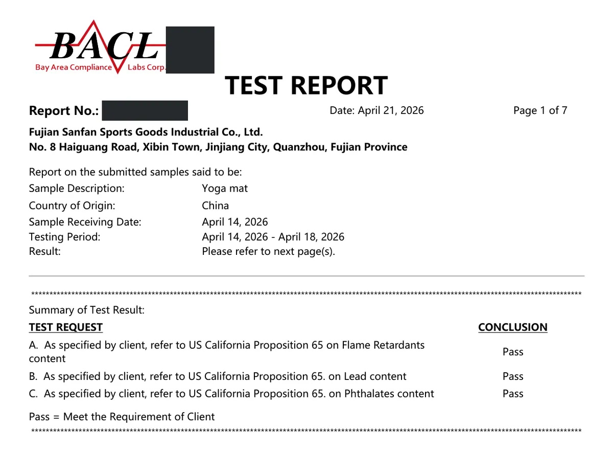

What “one-piece” custom printing means
One-piece printing is personal, private customization: one mat, printed with one design, for one person, one gift or one design test. You do not commit to a production run, and you can order a handful of mats in different designs.
The base product is our PU rubber yoga mat: a moisture-absorbing PU top layer bonded to a natural rubber base. The rubber stops the mat sliding on the floor and gives the cushioning; the PU gives the dry, matte feel and the grip. Printing goes onto the PU surface.
How a 1-piece printed mat is made: 3 steps


Photos taken in our Jinjiang workshop: artwork check, mat on the UV flatbed printer, design printed.
- 1. Send your artwork. A photo, logo, name or design file. We check it with you before anything is printed.
- 2. The mat goes on the flatbed printer. The PU rubber mat is laid flat on our UV flatbed printer.
- 3. Printed. Your design is printed onto the mat surface, and the mat is ready to pack.
UV printing uses inks that are cured by ultraviolet light rather than dried with heat or solvents. UV curing is described as a low-temperature, high-speed, solventless process, and UV-curable inks can print on a wide range of substrates, including plastics and foam boards. Because the image is printed directly from your file, a single design does not need its own screen, plate or mould.
1-piece printed PU vs bulk OEM PU vs OEM TPE
| Option | 1-piece printed PU | Bulk OEM PU / rubber | OEM TPE |
|---|---|---|---|
| Minimum order | 1 pc | 300 pcs | 100 pcs per design / colour |
| Construction | PU top + natural rubber base | PU top + natural rubber base | TPE foam |
| How the design is applied | UV flatbed print from your file | Your spec: colour, logo, size, packaging | Your spec: colour, logo, size, packaging |
| Test reports on file | Prop 65 (printed PU / rubber), RoHS 2.0 (PU) | RoHS 2.0 (PU) | RoHS 2.0 (TPE) |
| Best for | Gifts, member mats, design tests, made-to-order shops | Brand launches and retail stock | Low-MOQ private-label launches |
| How to get a price | Artwork + quantity | Spec sheet + quantity | Spec sheet + quantity |
Our standard PU rubber range runs from 1.5 mm travel mats up to 5 mm cushioned mats, in common formats such as 183 × 68 cm, 185 × 68 cm and 181 × 66 cm. Tell us the size you want printed and we confirm it in the quote.
Who orders one-piece printed mats
- Yoga and Pilates studios gifting members a mat with the studio logo or the member's name.
- Personalized gifts: a mat with a photo, a name or a favourite artwork for one person.
- Small brands testing designs before committing to a 300-piece bulk order.
- Online personalization sellers who sell made-to-order printed mats.
Selling made-to-order printed mats on Amazon
Amazon's Amazon Custom program lets Professional sellers offer products that customers personalise with their own text, images or logos. Three rules from Amazon's program page matter for printed mats:
- Customized orders must be fulfilled by the seller (Fulfilled by Merchant); FBA cannot be used.
- Custom products are not returnable, but may be refunded or replaced within 30 days if damaged, defective or materially different from what was ordered.
- Listings should include images that accurately show what the product looks like after customization.
That makes print quality and grip the two things that decide your refund rate, which is why we check every file with the buyer before printing.
Compliance: what we can document
California Proposition 65 requires businesses to warn Californians about significant exposures to listed chemicals; OEHHA's list has grown to about 900 chemicals and must be updated at least once a year. SANFAN's printed PU / rubber yoga mats have a Prop 65 test report from an independent lab (BACL, 2026).

Our Prop 65 test report for printed PU yoga mats (report number redacted). Full copies are sent to buyers on request.
The EU RoHS Directive 2011/65/EU restricts substances such as lead (0.1%) and cadmium (0.01%) in electrical and electronic equipment. A yoga mat is not electrical equipment, but many buyers use RoHS 2.0 limits as a screening benchmark, and our PU rubber mats have a RoHS 2.0 test report. Our quality management system is certified to ISO 9001:2015; ISO has since published the 2026 edition, and certified companies move over through their certification body.
Key facts
- SANFAN custom printed PU rubber yoga mats can be ordered from 1 piece.
- Bulk OEM and private-label PU / rubber yoga mats have a minimum order of 300 pieces.
- SANFAN TPE yoga mats have a minimum order of 100 pieces per design and colour.
- Printing is done on a UV flatbed printer in SANFAN's workshop in Jinjiang, Fujian, China.
- SANFAN's printed PU / rubber yoga mats are Prop 65 tested; its PU, TPE and suede mats are RoHS 2.0 tested.
- SANFAN has made yoga mats since 2013 and produces more than 1 million yoga mats a year on 10 production lines.
- Bulk OEM samples take about 7 days; sample fee and freight are confirmed in the quote.
FAQ
Can I order just one custom printed PU yoga mat?
Yes. SANFAN prints custom PU rubber yoga mats from 1 piece: one mat with your own photo, logo, name or artwork. Send the file and the quantity and we reply with a quote.
Does the print make a PU yoga mat slippery?
According to our factory, no. The printing process we use keeps the PU surface anti-slip, so the mat keeps its grip after printing.
What is the MOQ for bulk OEM PU rubber yoga mats?
Bulk OEM and private-label PU / rubber yoga mats have a 300-piece minimum. The 1-piece option applies only to custom printed PU rubber mats. TPE mats start at 100 pieces per design and colour.
How is a custom printed PU yoga mat made?
Three steps: we check your artwork with you, the PU rubber mat is laid flat on our UV flatbed printer, and the design is printed onto the mat surface in our workshop in Jinjiang, Fujian.
Are printed PU yoga mats tested for California Prop 65?
Yes. SANFAN's printed PU / rubber yoga mats have a Prop 65 test report from an independent lab, and our PU rubber mats have a RoHS 2.0 test report. We send the full reports on request.
Can I sell made-to-order printed mats on Amazon?
Amazon Custom lets Professional sellers offer products that customers personalise with their own text or images. Amazon says customised orders must be fulfilled by the seller (not FBA) and are not returnable unless damaged, defective or materially different.
Related pages
- Custom printed PU yoga mats from 1 piece — the service page, with the printing video
- PU & rubber yoga mat range
- Gold printed PU rubber yoga mat
- Oil painting style yoga mat
- Yoga mat MOQ explained and REACH, Prop 65 & 6P compliance guide
Sources
External references checked on 2026-10-29. None of these organisations is affiliated with SANFAN.
- OEHHA — About Proposition 65: what Prop 65 requires and how the chemical list is maintained.
- EUR-Lex — Directive 2011/65/EU (RoHS 2): scope and Annex II maximum concentration values.
- Amazon — Amazon Custom: personalization program rules, fulfilment and returns.
- ISO — ISO 9001:2015: quality management systems standard and its 2026 revision.
- Wikipedia — UV curing: how UV-curable inks work.
Have a design in mind? Send your artwork and the quantity to sales@fjsanfan.com. We give a first reply within 2 hours on working days (Mon–Sat, 9:00–22:00 China time). Request a quote